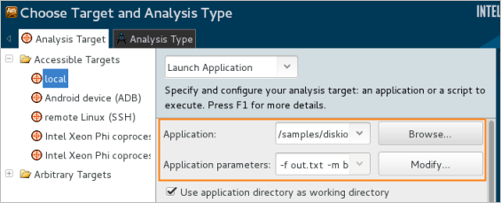
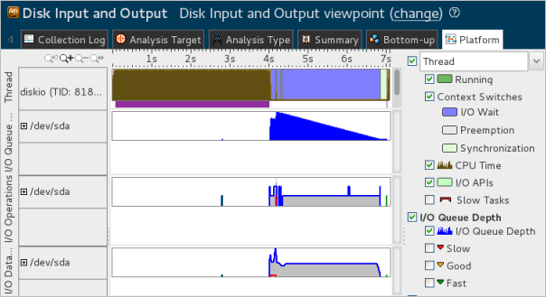

To minimize the CPU
usage and effectively use the I/O device, consider running the application in a
mode combining the usage of the system file cache and user buffer.
To minimize the CPU
usage and effectively use the I/O device, consider running the application in a
mode combining the usage of the system file cache and user buffer.
Configure a new data collection for the existing diskio project as follows:
Click the
 Configure
Project button on the toolbar.
Configure
Project button on the toolbar.
The Choose Target and Analysis Type window opens with the Analysis Target tab active.
In the Application parameters field, specify -f out.txt -m b, where b is the combined user buffer and system cache mode.

In this mode the diskio application will write records (16 Byte) into the user buffer (1024 records) and then write the buffer to the out.txt file relying on the system file cache.
Click the Choose Analysis button on the right.
The Analysis Type tab opens. The Disk Input and Output analysis is pre-selected.
Click the Start button on the right.
VTune Amplifier collects data and opens the result in the Disk Input and Output viewpoint with the Summary window active by default.
You see that the Elapsed Time of the diskio application in the system cache and user buffer mode has decreased significantly and is equal now to 7.350 seconds. At the same time, the I/O Wait Time metric has grown to almost 3 seconds and now is comparable with the CPU Time, which classifies the application as I/O bound.

To analyze the changes in the application workflow, switch to the Platform window:

You see that reduction of I/O API calls significantly reduced the CPU usage. But when the data is recorded to the output file, all operations are accumulated in the file cache waiting for the data to be written to the disk and creating a queue at the end of the application execution. To resolve this issue, consider writing the data to the disk directly to avoid accumulating a long queue.
Recap
You ran the Disk Input and Output analysis for the sample application in the combined system file cache and user buffer mode and identified that this mode provides about 66s of improvement in the application Elapsed Time but creates a long I/O queue and increases the I/O Wait Time.